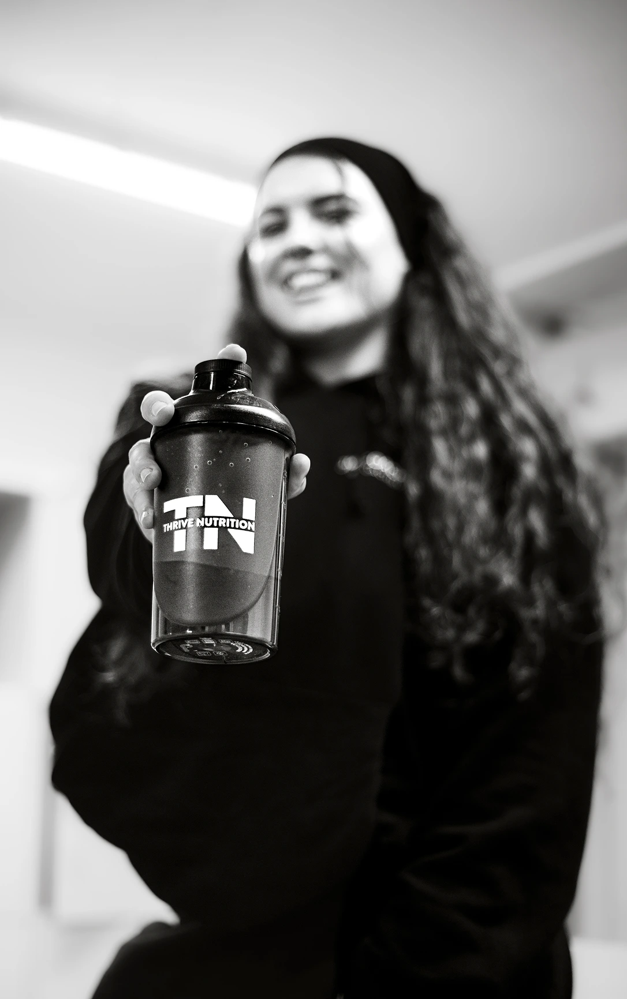
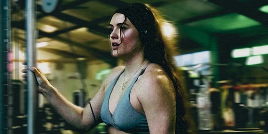
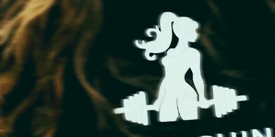
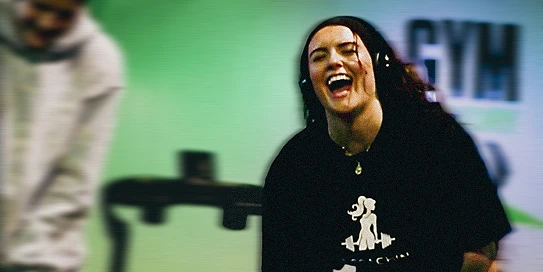
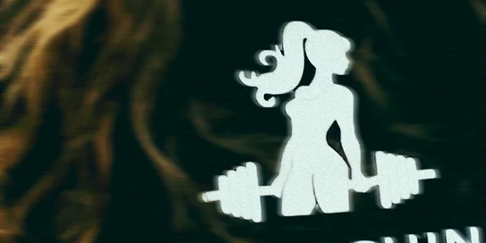
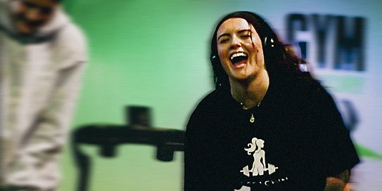

L'adversaire d'hier
« Tu oublies que le seul adversaire à battre, c’est toi-même.
Toi, la version d’hier. »
July m’a confié la réalisation d’une vidéo promotionnelle pour ses coachings sportifs. Ensemble, nous avons cherché à capter l’essence du dépassement de soi, la persévérance, la discipline et la force intérieure qui naissent dans l’effort.
July m’a confié la réalisation d’une vidéo promotionnelle pour ses coachings sportifs. Ensemble, nous avons cherché à capter l’essence du dépassement de soi, la persévérance, la discipline et la force intérieure qui naissent dans l’effort.






Making - off
J’ai pris beaucoup de plaisir à réaliser ce tournage. July
avait une vision claire de ce qu’elle souhaitait transmettre,
tout en me laissant une belle liberté pour explorer et créer
quelque chose d’impactant, qui invite au dépassement de soi.
Les prises de vue ont été réalisées avec un Canon 5D Mark III, puis retravaillées sur After Effects et Premiere Pro. Un projet simple, intense, et plein d’énergie.
Les prises de vue ont été réalisées avec un Canon 5D Mark III, puis retravaillées sur After Effects et Premiere Pro. Un projet simple, intense, et plein d’énergie.